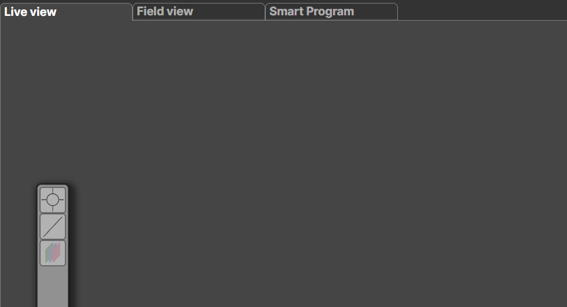
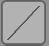
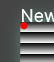
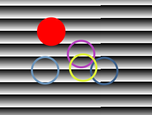
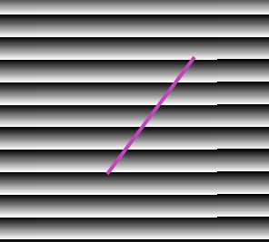
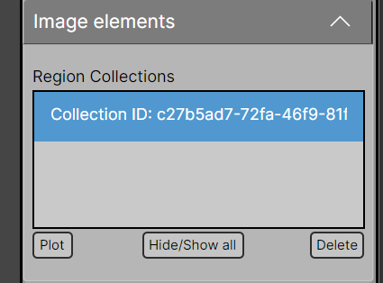
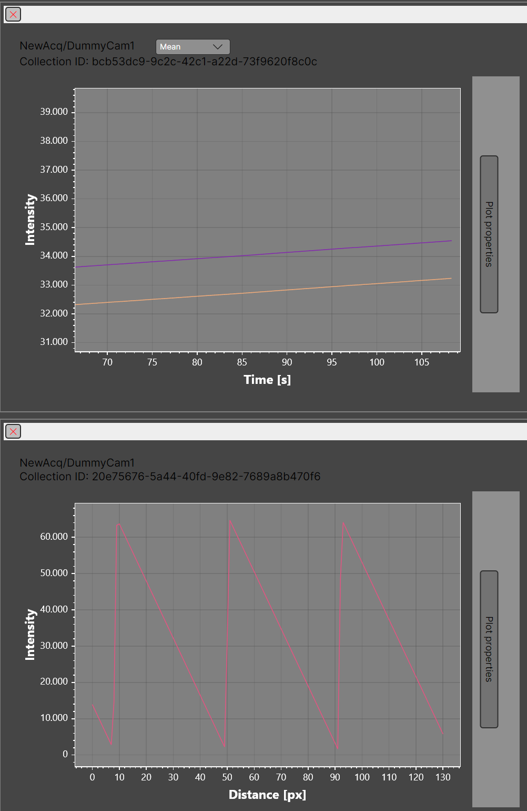

Live Plotting and Analysis Tools
A small set of live plotting and analysis tools is available during data acquisition.
These tools are pinned to the toolbar on the left side of the main image display.

Available Tools
Measures the mean, maximum, and minimum intensity within a selected circular region of the image.
Use Ctrl + + to increase the circle size and Ctrl + - to decrease it.

Line ProfilePlots the intensity profile along a line drawn across the image.
Use Ctrl + + to increase the line thickness and Ctrl + - to reduce it.
Using the Area Tool
- Select an image
Double-tap the image you want to analyze.
A faint aquamarine border will appear, indicating that the image is active.
- Activate the area tool
Click the Circular Area Selection button.
A red indicator dot will appear in the top-left corner of the image.

- Place circular regions
Move the cursor over the image and adjust the region size using
Ctrl + + or Ctrl + -.
Click once to place a circular region.
Multiple regions can be added before confirming.

- Confirm the selection
Press Enter to finalize the selection.
Using the Line Tool
-
Select an image
Double-tap the image to activate it.
A faint aquamarine border will appear. -
Draw the line
Move the cursor to the desired starting position and click once.
Move the cursor to the end position and click again to complete the line.

- Confirm the selection
Additional lines may be added if required.
Press Enter to finalize the selection.
Plotting Data
After confirming a selection, a new collection ID appears in the
Image Elements tab.

Each collection represents a group of selected elements.
The following actions are available:
-
Plot
Generates plots for all elements across all collections. -
Hide / Show all
Toggles the visibility of all analysis overlays on the images. -
Delete
Removes the selected collection.
Plots are generated separately for each Acquisition / Detector pair.
Viewing Plots
Pressing Plot opens a new window displaying the generated plots.

Plot windows can be closed at any time.
To display them again, simply press Plot.